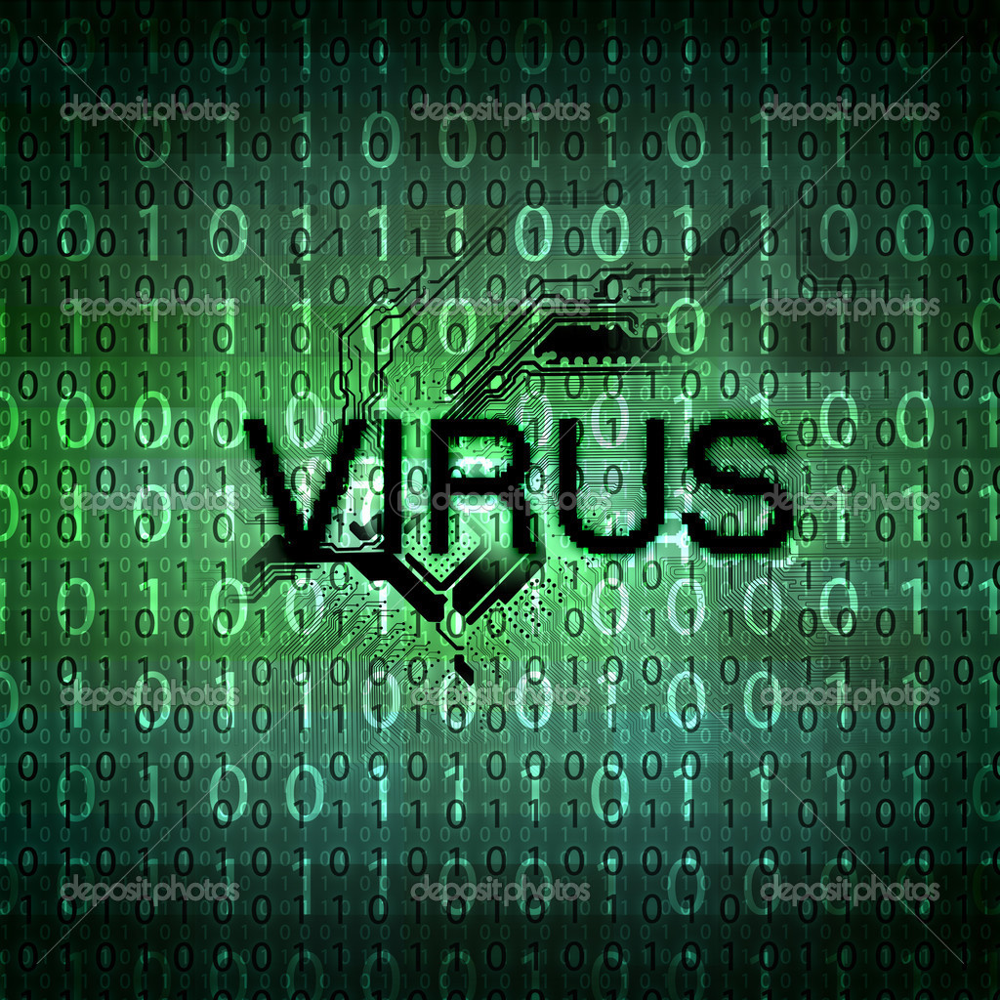

| Pagina Iniziale |
| Trojan Horse | Worm | Keylogger | Spyware | Zip Bomb | Phishing |
Un virus, in informatica, e' un software, appartenente alla categoria dei malware, che e' in grado, una volta eseguito, di infettare dei file in modo da riprodursi facendo copie di se stesso, generalmente senza farsi rilevare dall'utente. Coloro che creano virus sono detti virus writer. I virus possono essere o non essere direttamente dannosi per il sistema operativo che li ospita, ma anche nel caso migliore comportano comunque un certo spreco di risorse in termini di RAM, CPU e spazio sul disco fisso. Come regola generale si assume che un virus possa danneggiare direttamente solo il software della macchina che lo ospita, anche se esso puo' indirettamente provocare danni anche all'hardware, ad esempio causando il surriscaldamento della CPU mediante overclocking, oppure fermando la ventola di raffreddamento.
Un virus e' composto da un insieme di istruzioni, come qualsiasi altro programma per computer. È solitamente composto da un numero molto ridotto di istruzioni, (da pochi byte ad alcuni kilobyte), ed e' specializzato per eseguire soltanto poche e semplici operazioni e ottimizzato per impiegare il minor numero di risorse, in modo da rendersi il piu' possibile invisibile. Caratteristica principale di un virus e' quella di riprodursi e quindi diffondersi nel computer ogni volta che viene aperto il file infetto. Tuttavia, un virus di per se non e' un programma eseguibile, cosi' come un virus biologico non e' di per se una forma di vita. Un virus, per essere attivato, deve infettare un programma ospite, o una sequenza di codice che viene lanciata automaticamente, come ad esempio nel caso dei boot sector virus. La tecnica solitamente usata dai virus e' quella di infettare i file eseguibili: il virus inserisce una copia di se stesso nel file eseguibile che deve infettare, pone tra le prime istruzioni di tale eseguibile un' istruzione di salto alla prima linea della sua copia ed alla fine di essa mette un altro salto all'inizio dell'esecuzione del programma. In questo modo quando un utente lancia un programma infettato viene dapprima impercettibilmente eseguito il virus, e poi il programma.
L'utente vede l'esecuzione del programma e non si accorge che il virus e' ora in esecuzione in memoria e sta compiendo le varie operazioni contenute nel suo codice. Principalmente un virus esegue copie di se' stesso spargendo l'epidemia, ma puo' avere anche altri compiti molto piu' dannosi.